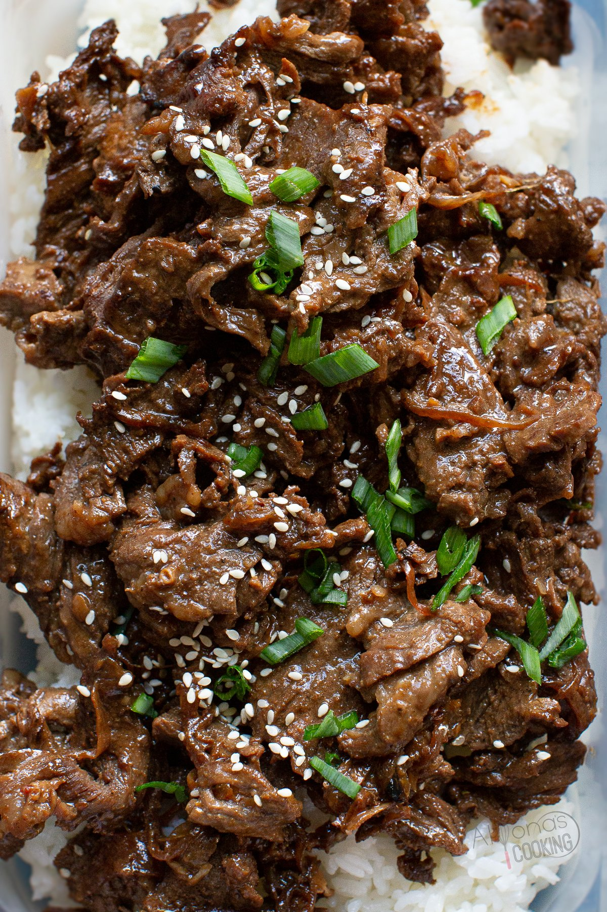

Bulgogi
Home

Description
Bulgogi is a marinated thin slices of beef that has a sweet and savory flavor
Ingredients:
- 5 table spoons of soy sauce
- 1/4 chopped green onion
- 2 1/2 tablespoons white sugar
- 2 tablespoons minced garlic
- 2 tablespoons sesame seeds
- 2 tablespoons sesame oil
- 1/2 teaspoon black pepper
- 1 lbs flank steak, thinly sliced
- 2 tablespoons vegetable oil
Steps:
- Created the marinade by mixing the soy sauce, green onion, sugar, garlic, sesame seeds/oil, black pepper into a bowl
- Place the flank steak into a bowl and pour the marinade in, cover and refrigerate for a few hours or overnight
- Pour the vegetable into a pan and bring it up to temperature
- Grill the meat until slightly charred and its ready to eat!